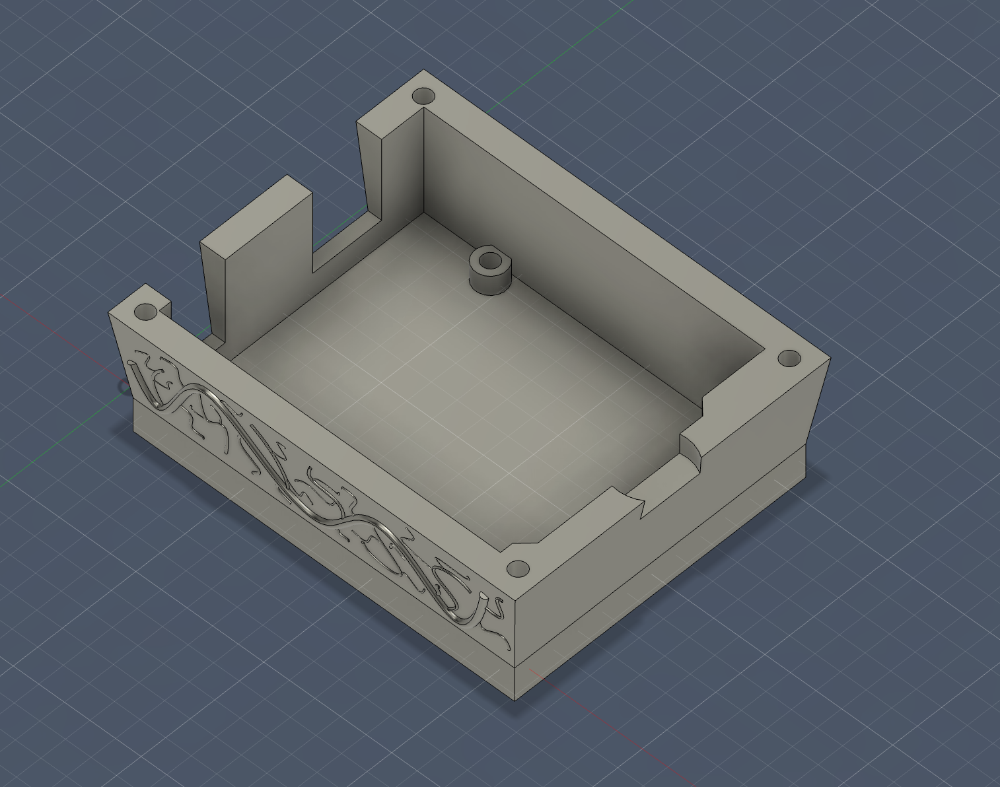
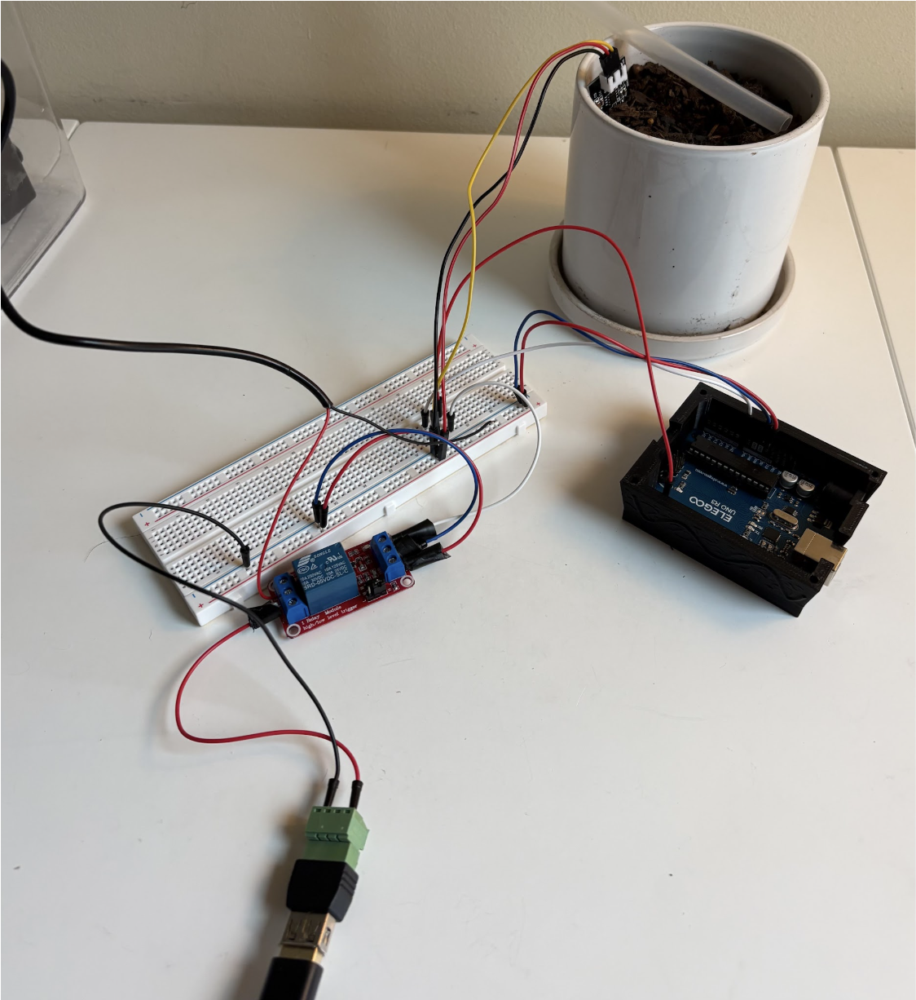
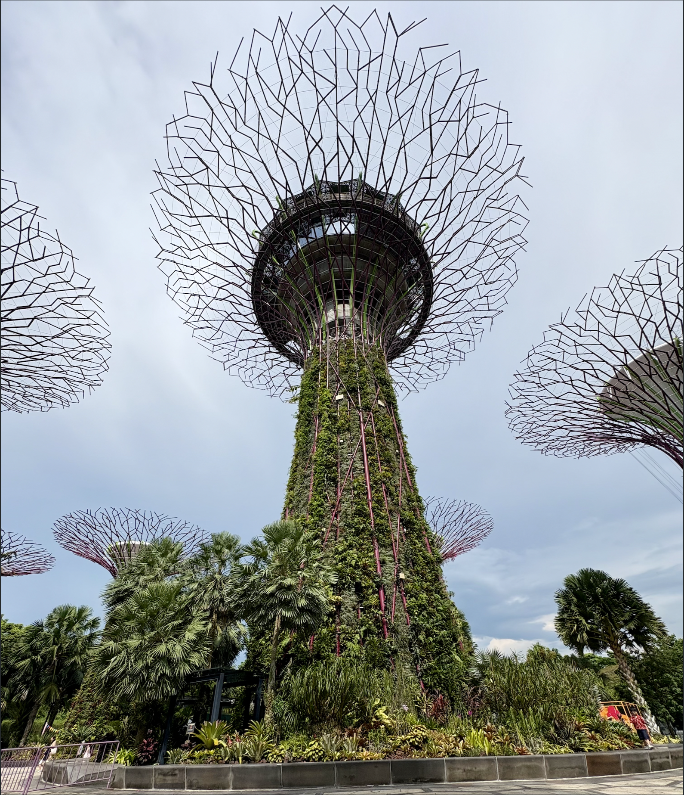

Singapore-Inspired
Smart Irrigation
System
A soil-moisture-driven irrigation prototype built with Arduino + Elegoo sensors and a CAD-designed 3D-printed enclosure — exploring how feedback-based watering could reduce unnecessary water use.
*15% is a design target; equivalence to the sensor reading requires calibration.
View Project Report ↓Engineering Report
The Problem: Standard home watering systems operate on arbitrary timers — running for a fixed duration regardless of actual soil conditions. This can lead to unnecessary watering when the soil already has sufficient moisture.
Before choosing components or modeling the enclosure, I defined the requirements that would guide the prototype. Items marked To verify are design questions, not completed test results.
| Parameter | Prototype design basis | Why it matters |
|---|---|---|
| Control objective | Initiate watering when a calibrated soil-moisture reading falls below the target of 15%; current firmware uses a raw cutoff of 450 pending calibration. | Respond to soil conditions rather than an arbitrary timer. |
| Sensing & controller | Analog moisture sensor on A0; Elegoo Uno R3 microcontroller. | Provides the feedback signal for the relay logic. |
| Electrical supply | Arduino logic: 5 V; pump rated voltage: 5 V DC. Verify that the pump power source and relay ratings match the actual hardware. | Motor supply and relay ratings must match the actual hardware. |
| Environmental protection | Moist-soil / splash exposure; enclosure IP rating: not yet verified. | Protects electronics from dust and water ingress. |
| Enclosure material | FDM 3D-printed PLA (polylactic acid); weather and heat resistance have not been verified. | Material choice affects water resistance, strength, and lifespan. |
| Fit & packaging | Integrate sensor mounting brackets and a replaceable gasket seat; dimensions/clearances: To document. | Prevents assembly misalignment and supports maintenance. |
| Mechanical limits | Water pressure, printed-part load, and maximum assembly weight: To measure. | Sets safe operating limits and informs the gasket geometry. |


// Simplified relay-control logic (illustrative) const int SENSOR_PIN = A0; const int RELAY_PIN = 7; // Confirm actual wiring const int DRY_THRESHOLD_RAW = 450; // Claimed ~15% moisture: verify with calibration int reading = analogRead(SENSOR_PIN); bool drySoil = (reading > DRY_THRESHOLD_RAW); digitalWrite(RELAY_PIN, drySoil ? HIGH : LOW); // Check whether your relay module is active-HIGH or active-LOW.
Calibration note: 450 is a raw 0–1023 sensor reading, not inherently 15% volumetric soil moisture. The percentage needs a documented wet/dry calibration or an appropriate sensor calibration method. Relay polarity, pin assignment, and pump power supply also require confirmation from the built circuit.
Initial prototype used a mechanical valve assembly. Under pressure testing, the gasket seal failed at the junction with the printed housing.
After locating the leak at the printed-housing/gasket junction, I revised the gasket seat in Fusion 360, adding a 1.2 mm lip channel and reprinting at 40% infill. This revision targeted a more consistent seal. The maximum pressure withstood still needs a recorded test value before I can claim a safety margin.
The Arduino control logic was configured to switch the relay when the sensor reading crossed the threshold of 450 (described as approximately 15% moisture, pending calibration). This demonstrated the intended sensor-to-relay response; activation time should be reported only if measured.
Gardens by the Bay — Observation Notes
At Gardens by the Bay, I considered how integrated structures, managed growing environments, and resource efficiency might inform a smaller engineering project. These are my takeaways to confirm against my own visit notes:
- Supertree Grove — integrated systems: Structures can serve more than one purpose. Takeaway: Consider how an irrigation enclosure can combine sensor mounting, protection, and maintenance access instead of treating each as a separate part.
- Flower Dome — environmental control: Controlled growing environments depend on monitoring conditions, not simply following a fixed schedule. Takeaway: Use measured soil conditions to inform watering decisions.
- Water stewardship — resource efficiency: Gardens are a useful place to ask where water comes from, how it is used, and where it goes. Takeaway: Future tests should measure water delivered against a timer-based baseline, rather than assuming savings.
These are project takeaways inspired by the visit, not claims that I personally tested the Gardens' infrastructure.


The Singapore Connection
Systems efficiency as a design philosophy
Living in Singapore exposed me to infrastructure that treats resource efficiency not as a constraint, but as a design objective. Singapore's water-reuse initiatives, including NEWater, and its Mass Rapid Transit (MRT) network encouraged me to think about how interconnected systems use limited resources. They inspired a practical question: could a small irrigation device also make decisions using real-time feedback?
This project applies that philosophy at the residential scale — replacing arbitrary timer-based irrigation with closed-loop sensor feedback. The goal is to respond to actual conditions and eventually quantify whether that approach uses less water.
The Builder
High school senior in the Charlotte, NC area pursuing a degree in Mechanical Engineering with a focus on systems efficiency and sustainable infrastructure.
My engineering spike: connecting lessons from Singapore’s urban infrastructure to hands-on prototyping—then documenting a failure, revising the CAD model, and testing the control logic.
Get in touch ↗Let's Connect
I'm always interested in conversations with engineers, researchers, and educators working on sustainability, systems design, or embedded electronics. Based in Charlotte, NC — open to UNCC lab visits and mentorship conversations.
kadin.wu.wheeler@gmail.com ↗